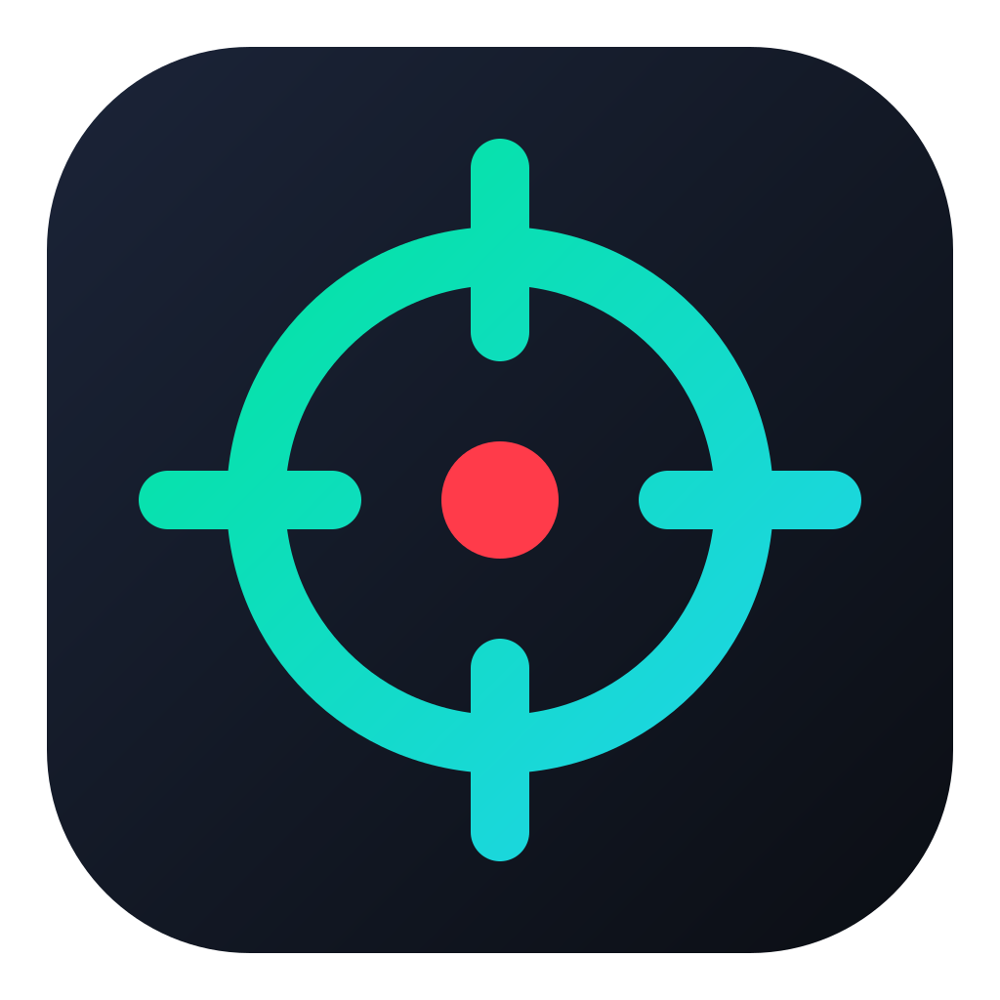
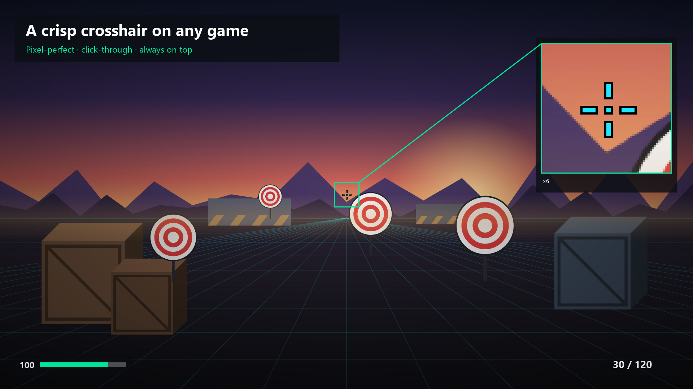
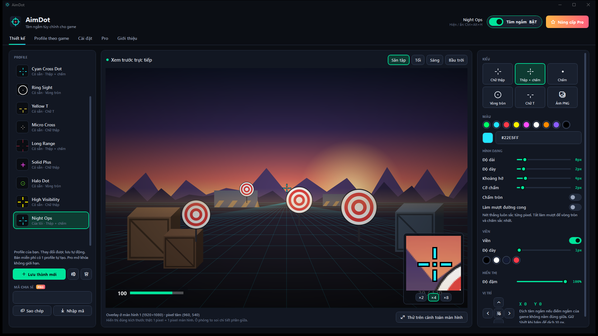

AimDot
Tâm ngắm tùy chỉnh, chuẩn từng pixel, nằm giữa màn hình cho mọi game.
A crisp, custom crosshair overlay for any game on Windows.

Chuẩn từng pixel
Nét thẳng khớp lưới pixel, không mờ. Chữ thập, chấm, vòng tròn, chữ T, viền, độ đậm, mọi màu.
Phím tắt khi đang chơi
Ctrl+Alt+H hiện/ẩn, Ctrl+Alt+←/→ đổi profile. Đổi được trong Cài đặt.
Cực nhẹ
Chỉ vẽ lại khi bạn thay đổi gì đó — khoảng 0,1% của 1 nhân CPU khi đang hiện.
An toàn với anti-cheat
Chỉ là cửa sổ overlay. Không chèn code, không hook DirectX, không đọc bộ nhớ game.

AimDot Pro
Bản cơ bản có 10 mẫu có sẵn và 1 profile tự tạo. Pro (mua một lần trong ứng dụng qua Microsoft Store) mở khóa không giới hạn profile, tâm ngắm bằng ảnh PNG, tự đổi profile theo từng game và mã chia sẻ tâm ngắm.
Pro (one-time in-app purchase) unlocks unlimited profiles, PNG crosshairs, per-game automatic profiles and share codes.
Tương thích / Compatibility
Windows 10 2004+ / Windows 11, x64. Chạy với game ở chế độ Borderless hoặc cửa sổ. Không hỗ trợ exclusive fullscreen vì Windows không cho cửa sổ nào hiện đè lên chế độ này.
Works with borderless windowed and windowed games. Exclusive fullscreen is not supported (no window can appear above it).
Hỗ trợ / Support
Email: tranxuandat.dev@gmail.com — gửi kèm phiên bản (tab Giới thiệu trong app) và mô tả lỗi.
Không thấy tâm ngắm trong game?
Chuyển chế độ hiển thị của game sang Borderless / "Fullscreen windowed". Kiểm tra công tắc "Tâm ngắm BẬT" hoặc nhấn Ctrl+Alt+H.
Tâm ngắm lệch so với tâm của game?
Dùng mục Vị trí trong tab Thiết kế để dịch từng pixel, hoặc trong Cài đặt chọn "Giữa cửa sổ đang dùng" nếu game chạy dạng cửa sổ.
AimDot có bị anti-cheat chặn không?
AimDot không chạm vào tiến trình game: không chèn DLL, không hook đồ họa, không đọc bộ nhớ. Tuy vậy mỗi game có luật riêng về overlay tâm ngắm — hãy kiểm tra quy định của game bạn chơi, nhất là ở giải đấu.
Đã mua Pro nhưng app vẫn báo bản thường?
Đăng nhập Microsoft Store bằng đúng tài khoản đã mua, mở lại AimDot. Vẫn lỗi thì gửi email cho chúng tôi.